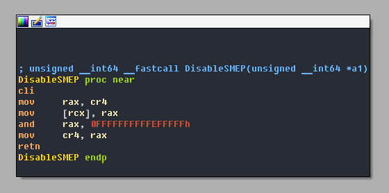

# Capcom.sys
•
https://www.youtube.com/watch?v=pJZjWXxUEl4 - Good explanation/demo/video
•
https://www.fuzzysecurity.com/tutorials/28.html - PowerShell code?! But good explanations
•
https://github.com/tandasat/ExploitCapcom•
https://www.unknowncheats.me/forum/general-programming-and-reversing/189625-capcom-sys-usage-example.html•
https://securelist.com/elevation-of-privileges-in-namco-driver/83707/ - Explanation of bandainamcoonline.sys which is compiled from the same source as capcom.sys
The capcom.sys driver allows you to execute kernel code from userland.
## Explanation
The capcom driver when sent IOCTL
0xAA013044 (
0xAA012044 on x86)
• disables SMEP
• takes a pointer to userland memory
and then executes that memory.
SMEP stands for Supervisor Mode Execution Protection.
It's a kernel mode protection which prevents kerneland code from executing userland memory pages.
In short, it verifies that kernel drivers can only execute kernel land code in kernel land memory pages.
By disabling SMEP, you allow kernel code to execute code in userland memory pages.
### Bugs
The capcom.sys driver also has a bug which prevents the capcom.sys exploit
from working on Windows 10 x64 20H2 because Driver Verifier.
•
https://github.com/tandasat/ExploitCapcom/issues/3At the end of its IRP_MJ_DEVICE_CONTROL function
it tries to return the status value in Irp->IoStatus.Status but Irp struct the line before.
Therefore on return it crashes.
// ..
IofCompleteRequest(Irp, 0); // Frees Irp
return Irp->IoStatus.Status; // Tries to return value from Irp
}
There's a fix for this which uses shellcode
(as far as I can make sense it clears the Irp pointer so that the return will return NULL)
•
https://github.com/tandasat/ExploitCapcom/pull/4## Modern Day
•
https://www.unknowncheats.me/forum/2502644-post4.htmlAs of June 2019, the Capcom.sys driver is potentially blacklisted by Microsoft.
It potentially won't even load.
{kind=link}